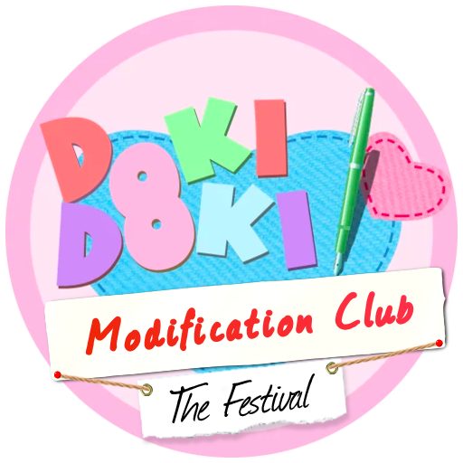

BestFit Bot for Discord
Created for Discord Hack Week 2019
BestFit Bot is a bot that helps users decide what games to play with their friends. It works by creating and internally maintaining groups of users that have certain games, then when called upon, determining which games the users have.

Doki Doki Literature Club: The Festival
A modification for the hit indie game "Doki Doki Literature Club"
Written in RenPy, a derivative of Python created for visual novels, this mod adds another 2 hours of original story to the base game.
